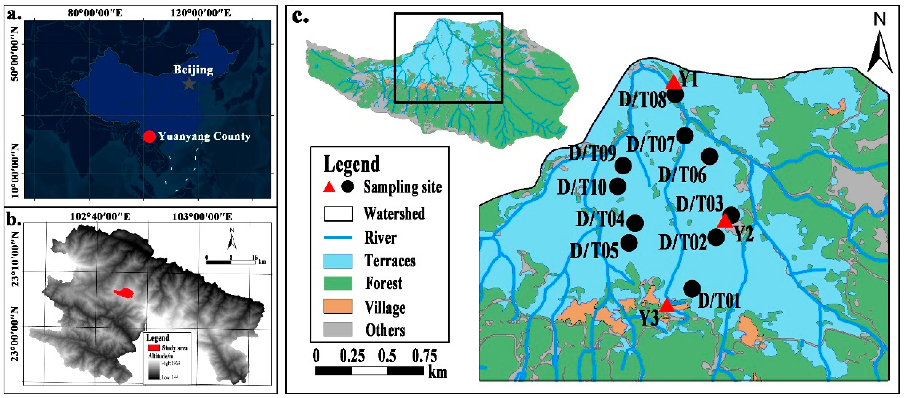

云南元阳
全福庄小流域
在土地利用图上取样，比较村寨、梯田与森林的分布。
土地利用图
查看研究原图 ↗从 A 到 B 读取沿线地类。

沿线地类
依据 Liu 等（2022）图 1c 的颜色采样。未判读包含图外、文字及符号。点数描述当前选线，不能换算为面积或高程。
云南元阳
在土地利用图上取样，比较村寨、梯田与森林的分布。
从 A 到 B 读取沿线地类。

依据 Liu 等（2022）图 1c 的颜色采样。未判读包含图外、文字及符号。点数描述当前选线，不能换算为面积或高程。